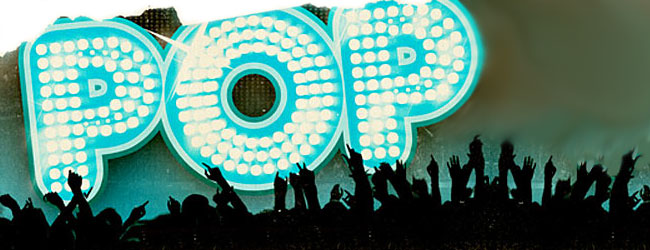

La música pop es uno de los géneros musical
mayormente extendido entre las juventudes
que gustan de la música en todo el mundo.
Esta breve historia de la música pop que
vamos a presentar a continuación busca
sintetizar los elementos mas significativos
que han dado lugar a este fenómeno musical.

Para remontarnos a los orígenes de la música
pop debemos retrotraernos al inicio mismo de
la música de rock en el año 1955. Esta breve
corriente de rock and roll inicial duraría
aproximadamente hasta el año 1958 cuando las
máximas estrellas de ese género estaban
distanciadas por diversos motivos de la música.
Recordemos que Elvis Presley se marcha ese año
al servicio militar, Buddy Holly falleció en un
accidente de aviación y Jerry Lee Lewis ingresa
en el escándalo de su boda con una niña de trece
ños.